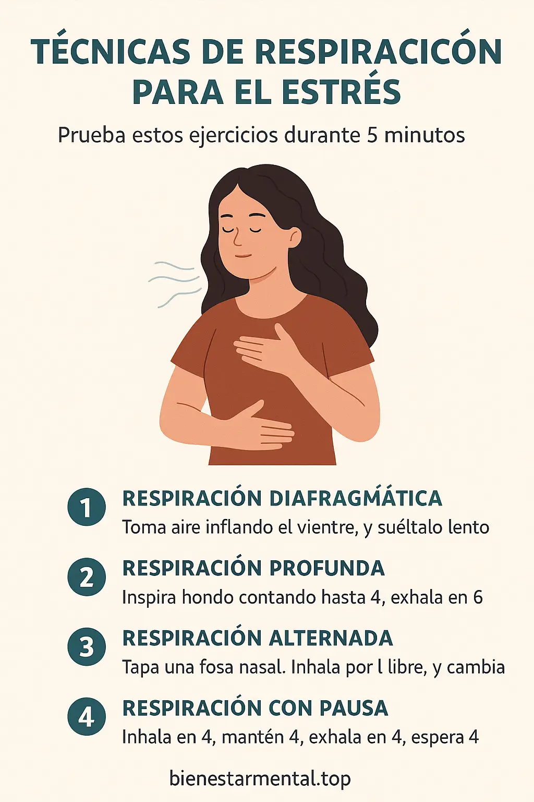

Técnicas de respiración para reducir el estrés en 5 minutos
Introducción emocional: cuando el cuerpo pide aire, no más esfuerzo
¿Has sentido que el corazón se acelera sin razón? ¿O que la mente no para aunque estés quieto? En esos momentos, tu cuerpo no necesita hacer más, solo respirar mejor. Estas técnicas de respiración para el estrés no requieren nada más que tu atención, un par de minutos y voluntad de volver al presente.
¿Cómo actúa la respiración sobre el estrés?
Cuando respiramos de forma superficial o agitada, el sistema nervioso interpreta que estamos en peligro. Al cambiar conscientemente el ritmo, activamos el nervio vago, clave para pasar del modo “lucha o huida” (simpático) al modo “descanso y digestión” (parasimpático). En solo 5 minutos, puedes sentir calma, claridad y conexión contigo mismo.
Técnicas de respiración para el día a día
1. Respiración 4-7-8 para ansiedad aguda
Paso a paso:
- Inhala por la nariz contando 4 segundos.
- Retén el aire 7 segundos.
- Exhala lentamente por la boca durante 8 segundos.
Repite de 3 a 5 ciclos. Esta técnica ayuda a calmar el sistema nervioso rápidamente. Úsala antes de dormir o cuando sientas palpitaciones.
2. Respiración diafragmática (abdominal)
Coloca una mano en el pecho y otra en el abdomen. Inhala por la nariz y asegúrate de que solo la mano del abdomen se eleve. Exhala por la boca lentamente. Practica frente al espejo unos minutos diarios para mejorar tu conciencia corporal.
3. Respiración cuadrada (box breathing)
Visualiza un cuadrado: inhala 4 segundos, retén 4, exhala 4, retén 4. Ideal para momentos de concentración o tensión. Usada por atletas y fuerzas especiales para regularse bajo presión.
Respiración y mindfulness: calma desde la atención plena
4. Respiración anclada con conteo consciente
Inhala contando hasta 3, exhala contando hasta 3. Concéntrate solo en los números y el ritmo. Puedes aumentar el conteo si estás más relajado. Este ejercicio ancla tu mente y reduce el pensamiento automático.
5. Respiración de 3 minutos con grounding
Realiza respiraciones lentas mientras observas 5 cosas a tu alrededor, sientes 4 texturas, escuchas 3 sonidos, hueles 2 aromas y saboreas 1 sensación. Este método une la respiración con el anclaje sensorial, útil en momentos de saturación emocional.
Checklist de técnicas para distintas situaciones
Descarga tu guía rápida con las mejores técnicas de respiración para:
- Ansiedad repentina
- Insomnio
- Estrés laboral
- Socialización
Infografía visual: elige tu respiración ideal en 5 minutos

¿Te cuesta decidir cuál usar? Esta imagen te guía según cómo te sientas: tensión muscular, mente acelerada, ansiedad, etc.
Enlaces internos recomendados en BienestarMental.top
Preguntas frecuentes sobre técnicas de respiración para el estrés
¿Cuál es la técnica más efectiva?
Depende de cada persona. La 4-7-8 es excelente para ansiedad aguda, mientras que la diafragmática sirve para uso diario.
¿Puedo practicarla solo/a?
Sí. De hecho, muchas de estas técnicas están diseñadas para aplicarse en cualquier lugar sin ayuda.
¿Cuántas veces al día debo hacerla?
Con 2 o 3 sesiones de 5 minutos es suficiente. Puedes usarlas también antes de dormir o en momentos de crisis.
¿Sirve si tengo ansiedad crónica?
Sí, pero debe complementarse con otras herramientas terapéuticas como psicoterapia o mindfulness estructurado.
¿Hay riesgo si tengo asma o hipertensión?
Consulta a tu médico si tienes condiciones respiratorias. La mayoría de estas técnicas son seguras y suaves.
¿En cuánto tiempo veo resultados?
Algunas técnicas tienen efecto inmediato. Otras, como la diafragmática, requieren unos días de práctica regular.